22. Services web avec le framework Flask
Par service web, on entend ici tout application web délivrant des données brutes consommées par un client, souvent un script console dans les exemples qui vont suivre. On ne s’intéresse pas à une technologie particulière, REST (REpresentational State Transfer) ou SOAP (Simple Object Access Protocol) par exemple, qui délivrent des données plus ou moins brutes dans un format bien défini. REST délivre du jSON alors que pour SOAP c’est du XML. Chacune de ces technologies décrit précisément la façon dont le client doit interroger le serveur et la forme que doit prendre la réponse de celui-ci. Dans ce cours, on sera beaucoup plus souple quant à la nature de la requête du client et celle de la réponse du serveur. Cependant, les scripts écrits et les outils utilisés sont proches de ceux de la technologie REST.
22.1. Introduction
Les scripts Python peuvent être exécutés par un serveur Web. Un tel script devient un programme serveur pouvant servir plusieurs clients. Du point de vue du client, appeler un service web revient à demander l'URL de ce service. Le client peut être écrit avec n'importe quel langage, notamment en Python. Dans ce dernier cas, on utilise alors les fonctions internet que nous venons de voir. Il nous faut par ailleurs savoir "converser" avec un service web, c'est à dire comprendre le protocole HTTP de communication entre un serveur Web et ses clients. C'était le but du paragraphe |le protocole HTTP|. Les clients web décrits dans cette partie du cours nous ont permis de découvrir une partie du protocole HTTP.
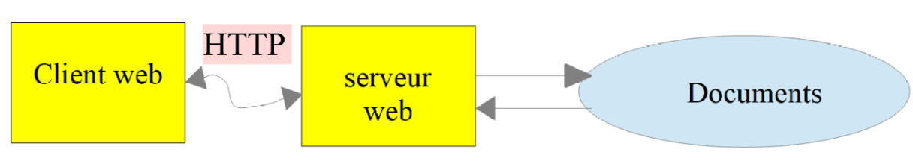
Dans leur version la plus simple, les échanges client / serveur sont les suivants :
- le client ouvre une connexion avec le port 80 du serveur web ;
- il fait une requête concernant un document ;
- le serveur web envoie le document demandé et ferme la connexion ;
- le client ferme à son tour la connexion ; Le document peut être de nature diverse : un texte au format HTML, une image, une vidéo, ... Ce peut être un document existant (document statique) ou bien un document généré à la volée par un script (document dynamique). Dans ce dernier cas, on parle de programmation web. Le script de génération dynamique de documents peut être écrit dans divers langages : PHP, Python, Perl, Java, Ruby, C#, VB.net, ...
Dans la suite, nous allons utiliser des scripts Python pour générer dynamiquement des documents texte.
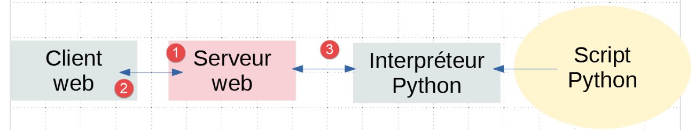
- en [1], le client ouvre une connexion avec le serveur, demande un script Python, envoie ou non des paramètres à destination de ce script ;
- en [3], le serveur web fait exécuter le script Python par l'interpréteur Python. Le script génère un document qui est envoyé au client [2] ;
- le serveur clôt la connexion. Le client en fait autant ; Le serveur web peut traiter plusieurs clients à la fois.
Dans la suite, nous utiliserons deux serveurs web :
- le serveur léger Werkzeug [https://werkzeug.palletsprojects.com/en/1.0.x/]. Ce serveur est utilisé par le framework web Flask [https://flask.palletsprojects.com/en/1.1.x/]. Nous l’appellerons plus fréquemment serveur Flask ;
- le serveur Apache 2 [https://httpd.apache.org/] ; Le serveur Flask sera utilisé dans la totalité des exemples. Le serveur Apache sera utilisé pour héberger l’application web que nous allons développer.
Le framework Flask est développé en Python. C’est un module qu’on installe dans un terminal PyCharm :
- ligne 1 : la commande exécutée ;
- ligne 19 : les éléments qui ont été installés :
- [flask-1.1.2] : est un framework de développement web en Python ;
- [Werkzeug-1.0.1] : est le serveur web qui va répondre aux demandes des clients ;
- [Jinja2-2.11.2] : est un outil permetant d’insérer des éléments dynamiques dans des pages qui seraient autrement des pages statiques ;
22.2. scripts [flask/01] : premiers éléments de programmation web
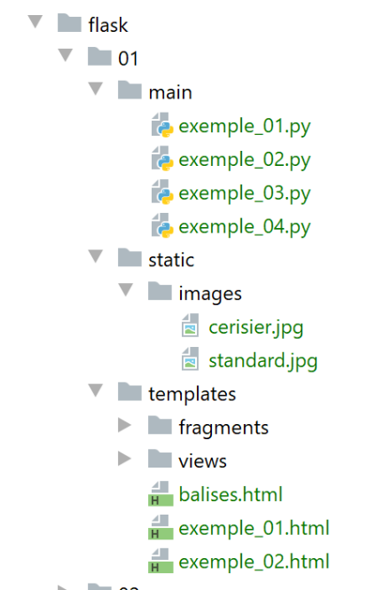
Nos exemples seront exécutés dans l’architecture suivante :
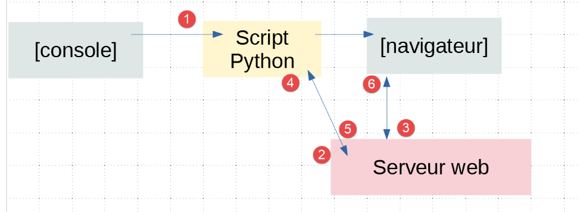
- en [1], un script Python sera exécuté comme l’est un script console classique ;
- en [2], de façon transparente, un serveur web est instancié et attend des requêtes. En fait il n’acceptera qu’une unique URL ;
- en [3], le navigateur demandera au serveur son unique URL ;
- en [4], le serveur fera exécuter le script Python désigné par la console [1] ;
- en [5], le script rendra ses résultats au serveur web, un document texte ;
- en [6], le serveur web enverra au navigateur ce document texte ;
22.2.1. script [exemple_01] : rudiments du langage HTML
Un navigateur web peut afficher divers documents, le plus courant étant le document HTML (HyperText Markup Language). Celui-ci est un texte formaté avec des balises de la forme <balise>texte</balise>. Ainsi le texte <b>important</b> affichera le texte important en gras. Il existe des balises seules, telles que la balise <hr/> qui affiche une ligne horizontale. Nous ne passerons pas en revue les balises que l'on peut trouver dans un texte HTML. Il existe de nombreux logiciels WYSIWYG permettant de construire une page WEB sans écrire une ligne de code HTML. Ces outils génèrent automatiquement le code HTML d'une mise en page faite à l'aide de la souris et de contrôles prédéfinis. On peut ainsi insérer (avec la souris) dans la page un tableau puis consulter le code HTML généré par le logiciel pour découvrir les balises à utiliser pour définir un tableau dans une page WEB. Ce n'est pas plus compliqué que cela. Par ailleurs, la connaissance du langage HTML est indispensable puisque les applications web dynamiques doivent générer elles-mêmes le code HTML à envoyer aux clients web. Ce code est généré par programme et il faut bien sûr savoir ce qu'il faut générer pour que le client ait la page web qu'il désire.
Pour résumer, il n'est nul besoin de connaître la totalité du langage HTML pour démarrer la programmation web. Cependant cette connaissance est nécessaire et peut être acquise au travers de l'utilisation de logiciels WYSIWYG de construction de pages WEB tels que DreamWeaver et des dizaines d'autres. Une autre façon de découvrir les subtilités du langage HTML est de parcourir le web et d'afficher le code source des pages qui présentent des caractéristiques intéressantes et encore inconnues pour vous.
Considérons l'exemple suivant qui présente quelques éléments qu'on peut trouver dans un document web tels que :
- un tableau ;
- une image ;
- un lien ;
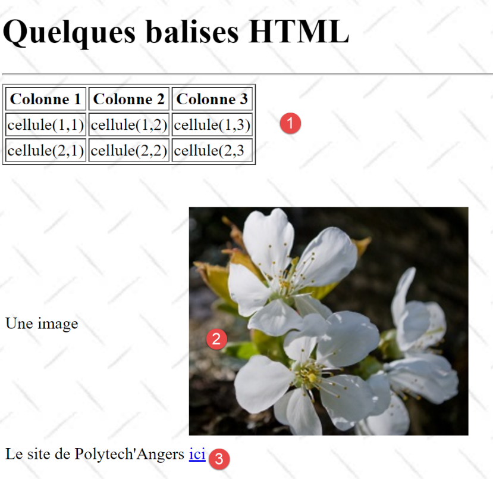
Un document HTML est encadré par les balises <html>…</html>. Il est formé de deux parties :
- <head>…</head> : c'est la partie non affichable du document. Elle donne des renseignements au navigateur qui va afficher le document. On y trouve souvent la balise <title>…</title> qui fixe le texte qui sera affiché dans la barre de titre du navigateur. On peut y trouver d'autres balises notamment des balises définissant les mots clés du document, mot clés utilisés ensuite par les moteurs de recherche. On peut trouver également dans cette partie des scripts, écrits le plus souvent en javascript ou vbscript et qui seront exécutés par le navigateur ;
- <body attributs>…</body> : c'est la partie qui sera affichée par le navigateur. Les balises HTML contenues dans cette partie indiquent au navigateur la forme visuelle "souhaitée" pour le document. Chaque navigateur va interpréter ces balises à sa façon. Deux navigateurs peuvent alors visualiser différemment un même document web. C'est généralement l'un des casse-têtes des concepteurs web ; Le code HTML de notre document exemple est le suivant :
Elément | balises et exemples HTML | ||
<title>Quelques balises HTML</title> (ligne 5) le texte [Quelques balises HTML] apparaîtra dans la barre de titre du navigateur qui affichera le document | |||
<hr /> : affiche un trait horizontal (ligne 10) | |||
<table attributs>….</table> : pour définir le tableau (lignes 12, 32) <thead>…</thead> : pour définir les entêtes des colonnes (lignes 13, 19) <tbody>…</tbody> : pour définir le contenu du tableau (ligne 20, 31) <tr attributs>…</tr> : pour définir une ligne (lignes 21, 25) <td attributs>…</td> : pour définir une cellule (ligne 22) exemples : <table border="1">…</table> : l'attribut border définit l'épaisseur de la bordure du tableau <td style="text-align: center;">cellule(1,2)</td> (ligne 23) : définit une cellule dont le contenu sera cellule(1,2). Ce contenu sera centré horizontalement (text-align: center). | |||
<img border="0" src="/static/images/cerisier.jpg"/> (ligne 38) : définit une image sans bordure (border=0") dont le fichier source est [/static/images/cerisier.jpg] sur le serveur web (src="/static/images/cerisier.jpg"). Si ce lien se trouve sur un document web obtenu avec l'URL [http://server/chemin/balises.html], alors le navigateur demandera l'URL [http://server/ static/images/cerisier.jpg] pour avoir l'image référencée ici. | |||
<a href="http://www.polytech-angers.fr/fr/index.html">ici</a> (ligne 43) : fait que le texte ici sert de lien vers l'URL http://www.polytech-angers.fr/fr/index.html. | |||
<body style="background-image: url(/static/images/standard.jpg)"> (ligne 8) : indique que l'image qui doit servir de fond de page se trouve à l'URL [/static/images/standard.jpg] du serveur web. Dans le contexte de notre exemple, le navigateur demandera l'URL [http://server/static/images/standard.jpg] pour obtenir cette image de fond. |
On voit dans ce simple exemple que pour construire l'intégralité du document, le navigateur doit faire trois requêtes au serveur :
- [http://server/chemin/balises.html] pour avoir le source HTML du document ;
- [http://server/static/images/cerisier.jpg] pour avoir l'image cerisier.jpg ;
- [http://server/static/images/standard.jpg] pour obtenir l'image de fond standard.jpg ; Le script [exemple_01] va nous permettre d’afficher la page statique [balises.html] précédente :
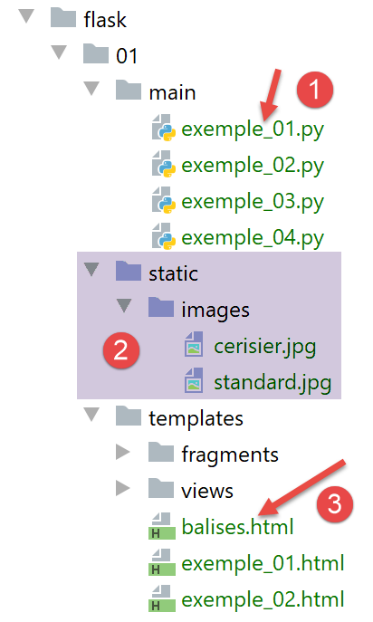
- en [1], le script [exemple_01] qui va être exécuté ;
- en [3], le document HTML qui va être affiché par le script ;
- en [2], les images du document HTML ; Le script [exemple_01] est le suivant :
- ligne 7 : on instancie une application Flask. Une application Flask est une application web ;
- le 1er paramètre est le nom donné à l’application. On peut donner le nom que l’on veut. Ici on a utilisé l’attribut prédéfini [name] qui vaut [main] (ligne 18) ;
- le second paramètre est un paramètre nommé, ç-à-d que sa position dans l’ordre des paramètres n’a pas d’importance. Le paramètre nommé [template_folder] désigne le dossier où trouver les pages statiques de l’application web. Les pages statiques sont délivrées telles quelles au navigateur. Ici, les pages statiques seront trouvées dans le dossier [templates] de l’arborescence du projet. Ligne 7, nous avons mis un chemin relatif au dossier [script_dir] contenant le script [exemple_01] exécuté ;
- le troisième paramètre est également un paramètre nommé. [static_folder] désigne le dossier où on va trouver les ressources du document HTML (images, vidéos, …). La également, nous avons mis un chemin relatif au dossier [script_dir] contenant le script [exemple_01] exécuté ;
- lignes 10-14 : on définit les URL acceptées par l’application web. Chaque URL est associée à une fonction qui s’exécute lorsque l’URL est demandée par un navigateur web ;
- ligne 11 : l’unique URL de l’application est l’URL [/]. Notez que dans [@app.route('/')], [app] est la variable initialisée ligne 7. La définition des routes (les différentes URL gérées par l’application) vient donc forcément après la définition de l’application [app]. Ce dernier nom est libre ;
- lignes 12-14 : la fonction qui s’exécute lorsqu’on demande l’URL [/] à l’application web [exemple_01] ;
- ligne 12 : la fonction associée à une URL peut porter un nom quelconque. Elle peut parfois avoir des paramètres pour récupérer des éléments de l’URL qui lui est associée. Ici elle n’en a pas ;
- ligne 14 :
- la fonction [render_template] rend une chaîne de caractères qui est le document texte produit par son paramètre. Celui-ci est ici [balises.html]. A cause du [template_folder] de la ligne 7, ce document sera cherché dans le dossier [f"{script_dir}/../templates"]. C’est effectivement là qu’il se trouve ;
- la fonction [make_response] génère une réponse HTTP pour le navigateur qui lui a demandé l’URL [/]. On a vu dans le paragraphe |le protocole HTTP| qu’une réponse HTTP a deux éléments :
- des entêtes HTTP ;
-
le document demandé par le navigateur, ici un document HTML ; Ligne 14, on a donné aucun paramètre à la fonction [make_response] pour générer des entêtes HTTP. Elle va alors en générer par défaut. On verra ultérieurement comment fixer ces entêtes HTTP.
-
finalement, lorsque le navigateur demande l’URL / à l’application Flask, il obtient la page [balises.html] ;
- lignes 17-20 : ces lignes servent à lancer le serveur web qui va exécuter l’application web [exemple_01] ;
- ligne 18 : cette condition n’est vraie que lorsque le script [exemple_01] est lancé au sein d’une console ;
- ligne 19 : l’application [app] de la ligne 7 est configurée :
- le paramètre nommé [ENV="development"] met le serveur web en mode développement : dès que le développeur modifie un élément de l’application celle-ci est régénérée et délivrée au serveur web. Le développeur n’a pas besoin de demander une nouvelle exécution ;
- le paramètre nommé [DEBUG=True] va permettre au développeur de mettre des points d’arrêt dans le code de l’application ;
- ligne 20 : l’application web est lancée : un serveur web est instancié et l’application web est déployée dessus afin de répondre aux requêtes de clients web ; Voici un exemple d’exécution :

Les logs suivants apparaissent alors dans la console d’exécution :
- ligne 2 : le serveur affiche le script exécuté ;
- ligne 3 : on est en mode développement ;
- lignes 4-5 : le serveur voit qu’on l’a lancé en mode [debug]. Il redémarre alors (ligne 5). Le mode [debug] ralentit donc un peu le démarrage ;
- ligne 8 : l’URL où l’application web déployée [exemple_01] est disponible ; Avec un navigateur web demandons l’URL [http://127.0.0.1:5000/] :
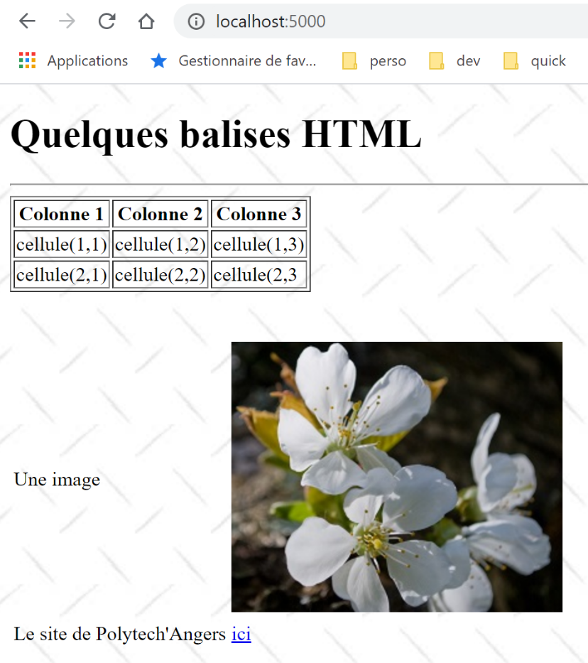
On obtient bien le document [balises.html] attendu.
22.2.2. script [exemple_02] : générer un document HTML dynamiquement

Le script [exemple_02] [1] va générer le document [exemple_02.html] [2] suivant :
Ce document est dynamique parce que son contenu n’est totalement connu qu’au moment où le serveur web le sert. On y trouve en effet aux lignes 5 et 8 deux éléments non connus au moment de l’écriture de la page. Ils ne sont connus qu’au moment où la page est envoyée à un client. Ils sont alors remplacés par leurs valeurs, celles-ci étant des chaînes de caractères.
- lignes 5, 8 : la syntaxe {{expression}} est une syntaxe du langage de templates Jinja2 [https://jinja.palletsprojects.com/en/2.11.x/]. Avant que la page ne soit envoyée à un client, les éléments dynamiques de la page (lignes 5 et 8) sont évalués et remplacés par leurs valeurs ;
- ligne 5 : on a utilisé la syntaxe [page.title]. On a donc supposé qu’à la génération de la page avant son envoi, une variable [page] est connue, on verra comment. Dans la syntaxe {{expression}} on peut utiliser les noms de variables que l’on veut. Aux lignes 5 et 8, on pourrait ainsi avoir {{title}} et {{contents}}. On pourrait dire alors que [title] et [contents] sont des paramètres de la page. Dans la suite, nous utiliserons toujours la même technique :
- l’unique paramètre de la page sera un dictionnaire [page] ;
- les attributs de ce dictionnaire seront utilisés dans la page. Ici [page.title] ligne 5 et [page.contents] ligne 8 ; L’application web [exemple_02.py] est la suivante :
- nous avons déjà expliqué dans l’exemple précédent, les lignes 4-5 et 18-20. Nous utiliserons toujours ce schéma dans nos exemples ;
- ligne 9 : la seule URL servie par l’application web est l’URL / ;
- ligne 14 : le document servi à l’URL / est le document [exemple_02.html] que nous venons de commenter. Nous savons qu’il a un paramètre, un dictionnaire appelé [page] ;
- ligne 12 : nous définissons le dictionnaire qui va être passé en paramètre à la page [exemple_02.html]. Il peut porter n’importe quel nom. Il doit cependant avoir les attributs [title, contents] utilisés dans le document HTML ;
- ligne 14 : la fonction [render_template] a pour rôle de rendre la chaîne de caractères du document [exemple_02.html]. Comme celui-ci est un document paramétré, on transmet à la fonction [render_template] le ou les paramètres attendus. Nous le faisons ici en donnant une valeur au paramètre nommé [page]. Dans l’opération [page=page] :
- à gauche du signe =, on a le paramètre [page] utilisé dans le document [exemple_02.html] ;
- à droite du signe =, on a la valeur [page] définie ligne 12 ;
- de façon générale, si un document HTML a les paramètres [param1, param2, …, paramn], on passera leurs valeurs à la fonction [render_template] sous la forme [render_template(document, param1=valeur1, param2=valeur2, …] ; Avant d’exécuter [exemple_02], nous devons arrêter l’exécution de [exemple_01] :
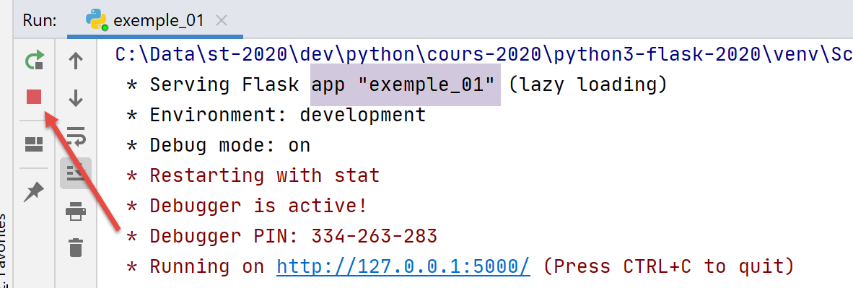
Si lors de l’exécution d’un script 1, vous avez l’impression que c’est un script 2 qui s’exécute c’est probablement parce que celui-ci est toujours en exécution. Pour revenir à un état connu, vous pouvez arrêter tous les processus en cours d’exécution dans PyCharm (en haut et à droite dans fenêtre PyCharm) :
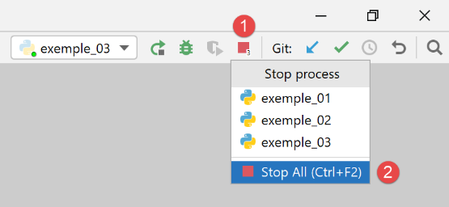
Exécutons le script [exemple_02] :
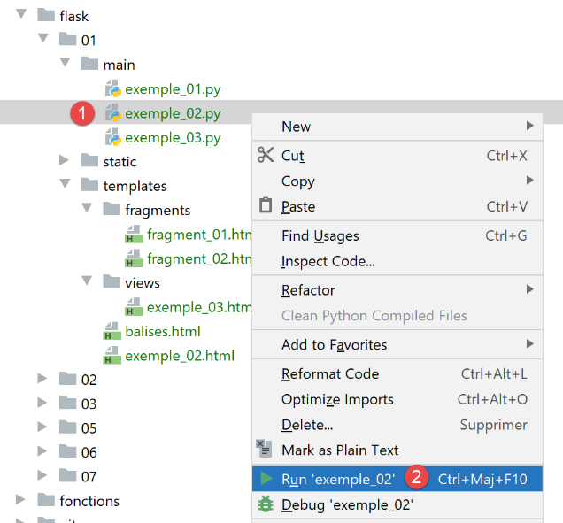
Les logs console sont alors les suivants :
La ligne 8 indique le port de déploiement (5000) de l’application [exemple_02] (ligne 1) sur la machine [localhost]. Les lignes précédentes étant toujours les mêmes, nous ne les remontrerons plus.
Avec un navigateur, nous demandons l’URL [http://localhost:5000/] :
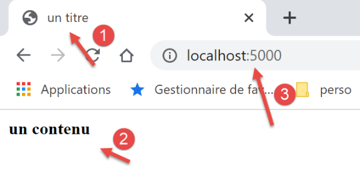
- l’expression {{page.title}} a produit [1] ;
- l’expression {{page.contents}} a produit [2] ;
22.2.3. script [exemple_03] : utiliser des fragments de page
- en [1], le script [exemple_03.py] va générer le document dynamique [exemple_03.html] [2]. Celui-ci sera construit à partir des fragments de page [fragment_01.html, fragment_02.html] [3] ; Le document [exemple_03.html] sera le suivant :
- lignes 3 et 5, on utilise la directive [include] de Jinja2 pour inclure dans le document des éléments externes à celui-ci ;
- la syntaxe est {% include … %}. Le paramètre de la directive [include] est le chemin du document à incorporer. Ce chemin est relatif au paramètre [template_folder] de l’application Flask :
Donc ici, les chemins des documents sont mesurés par rapport au dossier [templates].
Le fragment [fragment_01.html] (les noms sont bien sûr libres) est le suivant :
Le fragment [fragment_02.html] est le suivant :
Si on reconstitue le document [exemple_03.html] avec ces fragments, on obtient le code suivant :
On a donc un document identique à [exemple_02.html] mais construit à partir de fragments.
Le script web [exemple_03.py] est le suivant :
Le code est analogue à celui de [exemple_02.py]. Ligne 16, on montre comment on peut référencer des documents présents dans des sous-dossiers de [template_folder] de la ligne 7.
L’exécution du script [exemple_03.py] donne les résultats suivants dans le navigateur :
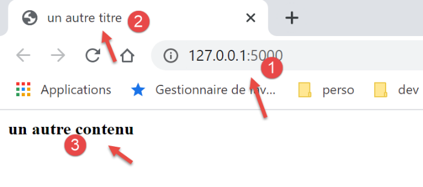
22.3. scripts [flask/02] : service web de date et heure
Le document [date_time_server.html] est le suivant :
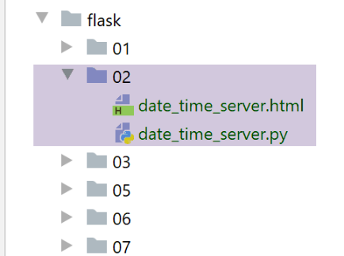
- ligne 8 : la page admet le paramètre [page.date_heure] ; Le service web [date_time_server.py] est le suivant :
- ligne 13 : l’application web ne sert que l’URL / ;
- lignes 15-24 : expliquent comment obtenir date et heure et comment les afficher ;
- ligne 27 : chaîne de caractères représentant la date et l’heure du moment ;
- lignes 28-30 : on génère le document dynamique [date_time_server.html] en lui passant le dictionnaire [page] de la ligne 29 ;
- ligne 31 : on affiche le type de [document] et le document lui-même. On veut montrer que c’est une chaîne de caractères ;
- ligne 33 : on génère la réponse HTTP qui va être envoyée au client (elle n’est pas encore envoyée) ;
- ligne 34 : on affiche son type et sa valeur ;
- ligne 35 : la réponse HTTP est envoyée au client ; L’exécution du script donne le résultat suivant dans un navigateur :
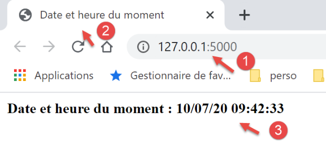
Les logs dans la console sont les suivants :
- ligne 10 : on voit que le type de la valeur rendue par [render_template] est de type [str]. Cette chaîne de caractères n’est autre que le document [date_time_server.html] une fois interprété (lignes 10-19) ;
- ligne 20 : on voit que le type de la valeur rendue par [make_response] est de type [flask.wrappers.Response]. La fonction [Response.str] a été implicitement appelée pour afficher l’objet [Response]. La chaîne rendue par cette fonction donne deux informations sur la réponse HTTP qui va être faite :
- le document envoyé fait 195 octets ;
- le statut de la réponse HTTP est [200 OK]. On verra ultérieurement qu’on a accès à ce code de statut ;
22.4. scripts [flask/03] : services web générant du texte brut
Nous avons vu dans un précédent exemple que le service web délivrait le document suivant :
Un client web pourrait n’être intéressé que par l’information [page.date_heure] de la ligne 8 et pas par l’habillage HTML qu’il y a autour. Le service web pourrait délivrer cette information comme une simple chaîne de caractères. Nous allons présenter ici des exemples de ce type de service web.
22.4.1. script [main_01]
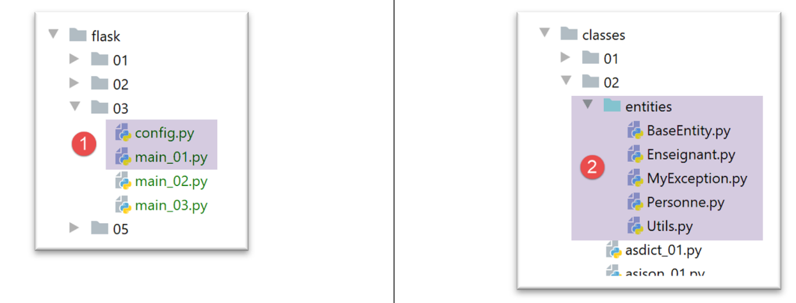
- [main_01] est le service web ;
- [config] est le script de configuration de l’application web ;
- le service web utilise certaines des entités définies en [2] ; Le script [config] est le suivant :
Le rôle premier de cette configuration est de définir le Python Path du service web. Il faut qu’on puisse trouver les entités [2] (ligne 8).
Le script web [main_01] est le suivant :
- lignes 1-3 : le Python Path de l’application est fixé ;
- lignes 5-10 : on importe les éléments dont a besoin le script ;
- ligne 17 : le service web ne sert que l’URL / ;
- ligne 20 : on crée un objet [Personne] ;
- ligne 22 : on crée une réponse HTTP avec la chaîne de caractères représentant la personne. La fonction [Personne.str] va être appelée. Celle-ci rend la chaîne jSON du dictionnaire [asdict] de la personne (cf. |classe BaseEntity|). Le paramètre de la fonction [make_response] est le document texte envoyé au client, donc ici la chaîne jSON d’une personne ;
- ligne 24 : on met dans les entêtes HTTP de la réponse, un entête [Content-type] qui indique au client quel type de document il va recevoir, ici un document jSON codé en UTF-8 ;
- ligne 26 : on rend un tuple de deux éléments :
- la réponse au client, entêtes HTTP et document ;
- le code de statut de la réponse. Ici on veut rendre le code de statut [200 OK]. Les différents codes de statut sont définis par des constantes dans le module [flask_api] importé ligne 7 ; Le module [flask_api] n’est pas disponible nativement. Il faut l’installer. On fait cela dans un terminal PyCharm :
Lorsqu’on exécute le script web [main_01], on obtient les résultats suivants dans un navigateur :

- en [2], la chaîne jSON reçue ;
- en [3-4], on fait afficher le contenu du document reçu. On voit qu’il n’y a aucun habillage HTML, seulement la chaîne jSON ; Voyons maintenant le rôle de l’entête [Content-Type] envoyé au client par le service web. On met le navigateur en mode développeur (F12 en général) et on redemande la même URL. Ci-dessous une copie d’écran d’un navigateur Chrome :
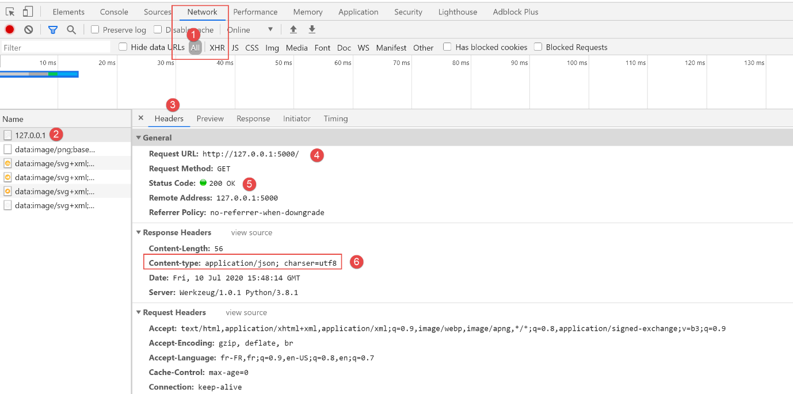
- en [1], sélectionner l’onglet [Network] ;
- en [2, 4] : l’URL demandée par le navigateur ;
- en [3], sélectionner l’onglet [Headers] (entêtes HTTP) ;
- en [5], le code de statut de la réponse HTTP reçue ;
- en [6], l’entête indiquant au client qu’il va recevoir un texte jSON. Cela permet au client de s’adapter à la réponse. Ainsi la police de caractères utilisée par Chrome pour afficher une réponse jSON ou une réponse texte basique n’est pas la même ;
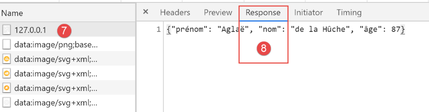
- en [8], on sélectionne l’onglet [Response] pour avoir accès au document envoyé par le serveice web, ici une simple chaîne jSON ;
22.4.2. Postman
[Postman] est l’outil qui va nous permettre d’interroger les différentes URL d’une application web. Il nous permet :
- d’utiliser n’importe quelle URL : celles-ci sont fabriquées à la main ;
- de requêter le serveur web par un GET, POST, PUT, OPTIONS… ;
- de préciser les paramètres du GET ou du POST ;
- de fixer les entêtes HTTP de la requête ;
- de recevoir une réponse au format jSON, XML, HTML,
- d’avoir accès aux entêtes HTTP de la réponse. On a donc ainsi accès à la réponse HTTP complète du serveur ; [Postman] est un excellent outil pédagogique pour comprendre la communication client / serveur du protocole HTTP.
[Postman] est disponible à l’URL [https://www.getpostman.com/downloads/]. Procédez à l’installation de votre version de [Postman]. Au cours de l’installation, on vous demandera de créer un compte : celui-ci sera inutile ici. Le compte [Postman] sert à synchroniser différents appareils afin que la configuration de l’un soit répliqué sur un autre. Rien de tout ceci n’est utile ici.
Une fois installé, [Postman] présente l’interface suivante :
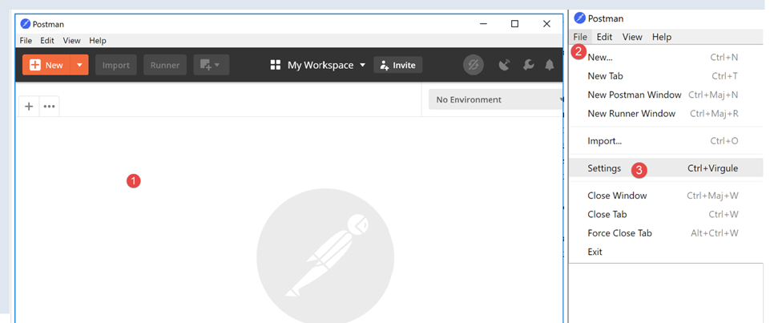
- en [2-3], on a accès au paramétrage du produit ;
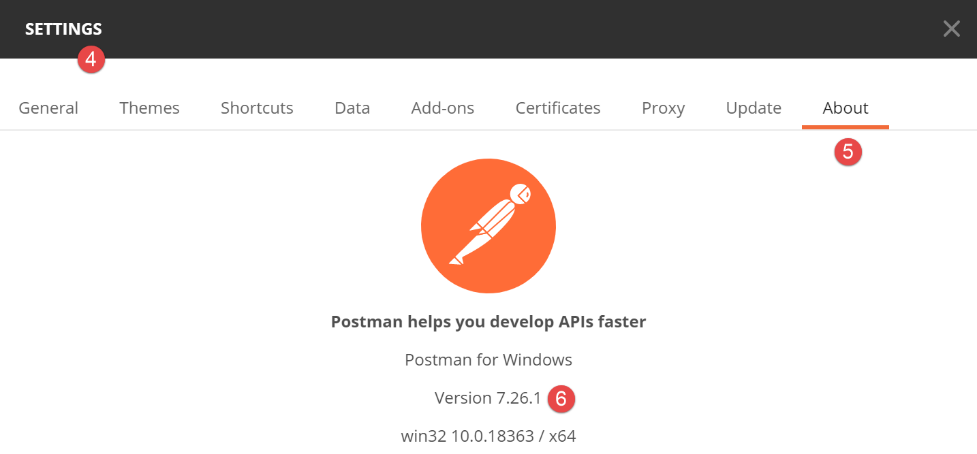
-
en [6], la version utilisée dans ce document ; Nous allons ici utiliser [Postman] pour tester le service web jSON précédent :
-
noux exécutons le script [flask/03/main_01] ;
- puis nous demandons l’URL [http://localhost:5000/] avec Postman ;

- en [1], on crée une requête ;
- en [2], ce sera une requête HTTP GET ;
- en [3], l’URL du service web interrogé ;
- en [4], on envoie la requête au service web ;
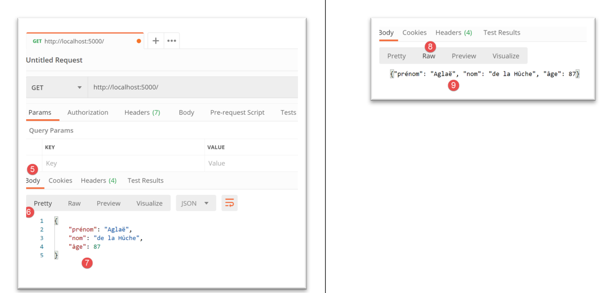
- en [5], on sélectionne l’onglet [Body] qui affiche le document reçu ;
- en [6], on sélectionne l’onglet [Pretty] qui affiche le document reçu avec une mise en forme appropriée, ici une forme appropriée à une chaîne jSON ;
- en [7], le document jSON reçu ;
- en [8-9], le document reçu sans mise en forme ;
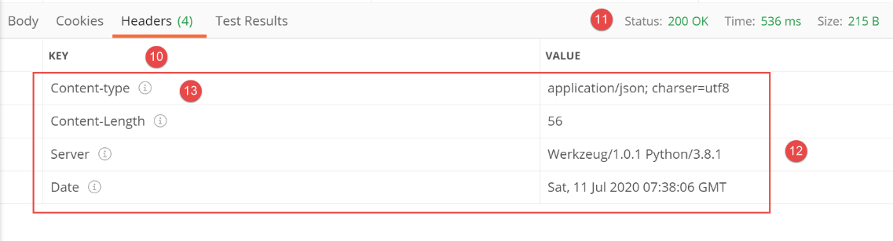
- en [10], on affiche les entêtes HTTP reçus par Postman ;
- en [11], le statut HTTP de la réponse reçue ;
- en [12], les entêtes HTTP reçus ;
- en [13], l’entête [Content-type] qui a permis à Postman de savoir qu’il allait recevoir une chaîne jSON. Postman a utilisé cette information pour mettre en forme, d’une certaine façon, le document reçu ; Il y a une autre façon d’utiliser Postman. Elle consiste à utiliser la console Postman (Ctrl-Alt-C). Celle-ci permet de voir le dialogue client / serveur. Outre la séquence Ctrl-Alt-C, la console Postman est disponible via une icône en bas à gauche de la fenêtre principale de Postman :
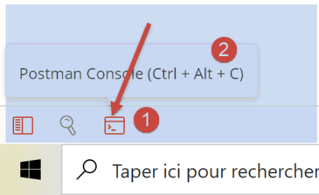
La console Postman mémorise les dialogues client / serveur qui ont lieu lorsqu’une requête Postman est exécutée :
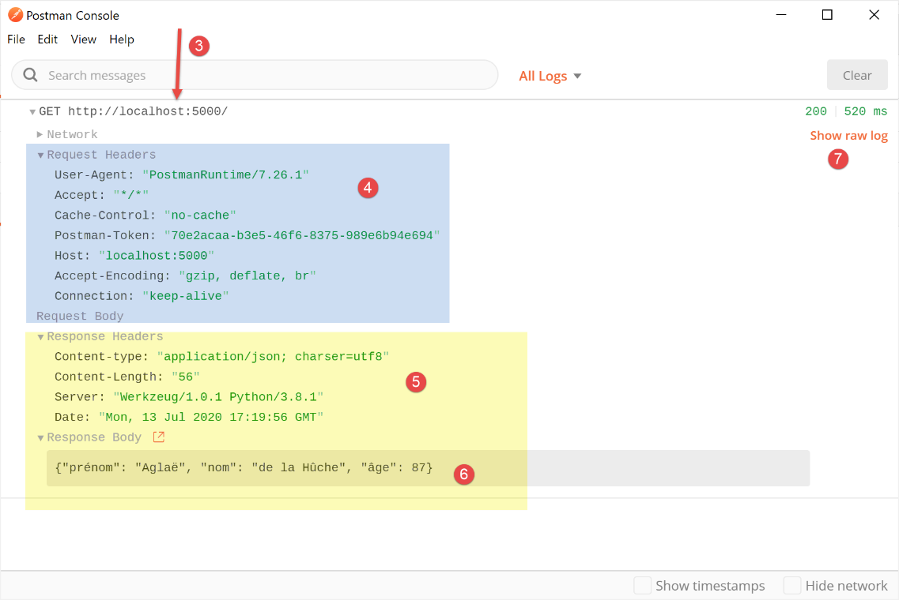
- en [3], la liste des requêtes faites par Postman depuis qu’il a été lancé. Les plus récentes sont en bas de la liste ;
- en [4], la requête HTTP faite par Postman ;
- en [5-6], la réponse HTTP faite par le serveur web ;
- en [7], on peut voir les logs en mode [raw], ç-à-d sans artifice de présentation ; En mode [raw] la fenêtre de la console devient la suivante :

- en [8], la requête HTTP faite par Postman au serveur web ;
- en [9], la réponse HTTP faite par le serveur web ;
- en [10], on peut revenir au mode [pretty logs] ; Afin de faciliter les explications, nous numéroterons les lignes obtenues à partir de la console Postman.
Pour le client :
Pour le serveur :
A partir de maintenant, nous utiliserons principalement :
- [Postman] comme client web ;
- la console [Postman] en [raw mode] pour expliquer le dialogue client / serveur ;
22.4.3. script [main_02]
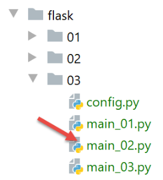
Le script web [main_02] est le suivant :
- le script [main_02]est analogue au script [main_01]. Il en diffère sur deux points :
- ligne 22 : le document envoyé au client est une chaîne de caractères brute, pas une chaîne jSON ;
- ligne 24 : ceci est reflété dans l’entête HTTP [Content-Type] qui indique le type [text/plain] pour le document ; Nous exécutons le script web [main_02] puis utilisons [Postman] pour l’interroger :
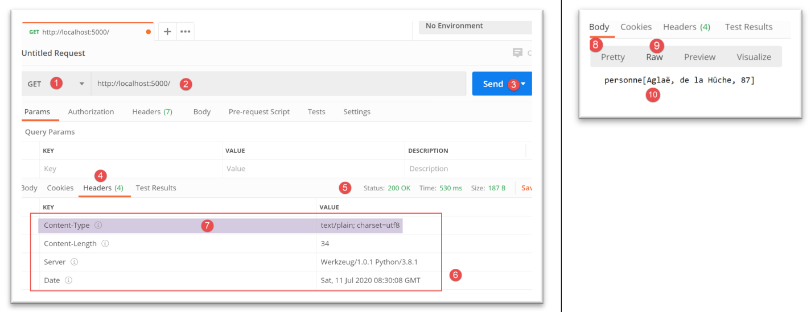
- en [1-3], on fait la requête au service web ;
- en [5], le statut OK de la réponse ;
- en [4, 6], les entêtes HTTP de la réponse ;
- en [7], l’entête [Content-Type] ;
- en [8-10], le document envoyé par le service web, une chaîne de caractères ; La console Postman donne les logs suivants :
Requête du client :
Réponse du serveur :
22.4.4. script [main_03]
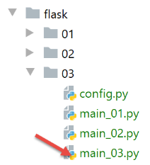
Le script web [main_03] est le suivant :
- ligne 23 : on provoque une erreur en instanciant une personne incorrecte ;
- lignes 27-29 : à cause de l’erreur :
- ligne 28 : on prépare une réponse HTTP ayant comme contenu le message d’erreur ;
- ligne 29 : on donne au code de statut HTTP une valeur d’erreur [500 Internal Server Error] ;
- ligne 34 : on indique au client qu’on lui envoie un texte brut ;
- ligne 36 : on envoie la réponse HTTP au client ; Nous lançons le service web [main_03] et nous utilisons Postman pour l’interroger :
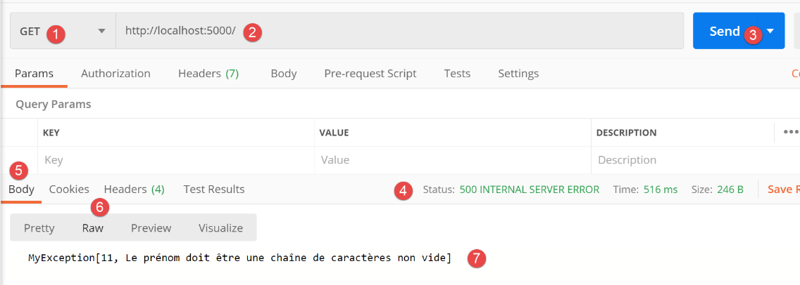
- en [1-3], nous envoyons la requête ;
- en [4], on obtient une réponse avec un code de statut [500 INTERNAL SERVER ERROR] ;
- en [5-7] : la réponse est un texte décrivant l’erreur qui s’est produite ;
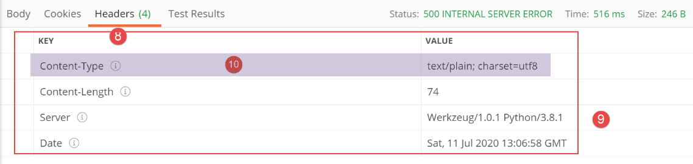
- en [8-10], les entêtes HTTP de la réponse du service web ; Dans la console Postman, les résultats en mode [raw] sont les suivants :
Requête du client :
Réponse du serveur :
22.5. scripts [flask/04] : informations encapsulées dans la requête
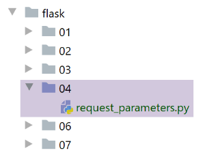
Le script [request_parameters.py] se propose de montrer que le service web a accès à diverses informations encapsulées dans la requête d’un client web. Le code est le suivant :
- ligne 9 : nous introduisons un changement. Nous précisons quelles sont les verbes autorisés dans la requête du client. Postman en donne la liste :
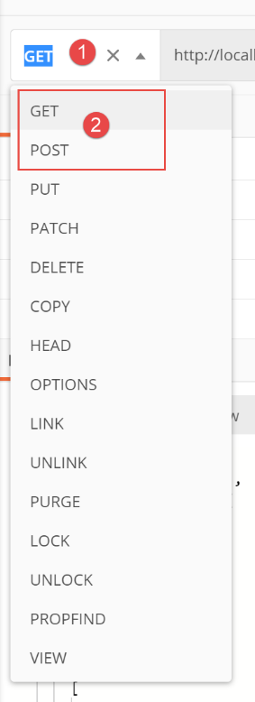
Les deux premiers [GET, POST] sont les plus utilisés et seront également les seuls à être utilisés dans ce document. Pour en revenir à la ligne 9 du code, le paramètre [methods] contient la liste des méthodes de la liste ci-dessus autorisées par l’URL. En l’absence de ce paramètre, seule la méthode [GET] est autorisée. C’est ce qui s’est passé jusqu’à maintenant ;
- ligne 12 : nous allons construire le dictionnaire [request_data] ;
- ligne 13 : la requête du client est disponible dans un objet prédéfini [request], importé ligne 2, de type [werkzeug.local.LocalProxy]. Les lignes qui suivent récupèrent divers attributs de cet objet ;
- plutôt que de détailler chaque attribut de l’objet [request], nous allons exécuter ce code et regarder les résultats. On comprendra alors mieux la signification des différents attributs affichés ;
- ligne 42 : le dictionnaire [request_data] sera le contenu de la réponse HTTP. On se rappelle que celui-ci doit être du texte. Flask transforme automatiquement les dictionnaires en chaînes jSON ;
- ligne 44 : on dit au client qu’il va recevoir du jSON ;
- ligne 46 : on envoie la réponse au client ; Avec le client Postman, nous envoyons la requête suivante au service web précédent :

- en [1-2], la requête envoyée ;
- en [2], la requête est paramétrée. Les paramètres sont accolés à l’URL sous la forme [ ?param1=valeur1¶m2=valeur2]. Il y a deux façons de saisir ces paramètres dans Postman :
- les écrire directement dans l’URL ;
- les écrire en [3-4] ; Les deux méthodes sont équivalentes ;
Nous ajoutons d’autres paramètres à la requête :
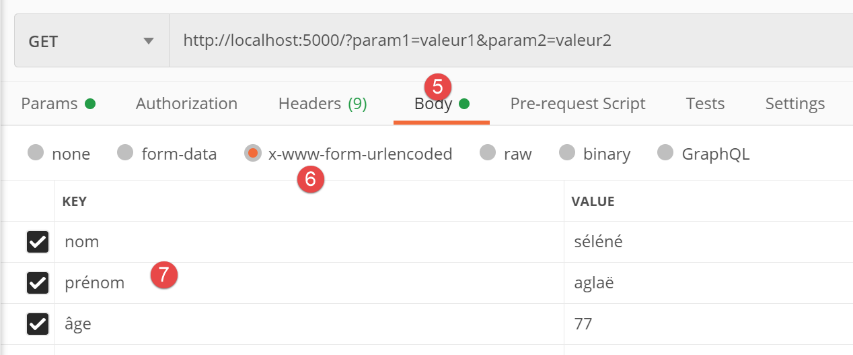
- en [5-7], nous ajoutons des paramètres dans le corps (=body) de le requête. Alors que les paramètres de l’URL sont visibles par l’utilisateur d’un navigateur web, ceux qui font partie du corps de la requête ne sont pas visibles. Le navigateur (ou Postman ici) les envoie au serveur après les entêtes HTTP. La requête du client web a alors la même structure que la réponse du serveur web : des entêtes HTTP suivis par un document. Cela va faire apparaître deux nouveaux entêtes HTTP dans la requête du client :
- [Content-Type] : le client dit au serveur quel type de document il envoie ;
- [Content-Length] : la taille du document en octets ;
- en [6], le codage à employer pour les paramètres déclarés en [7]. Ceux-ci peuvent être codés de diverses façons. [x-www-form-urlencoded] est une méthode utilisée fréquemment par les navigateurs ; On peut voir la requête qui va être générée :
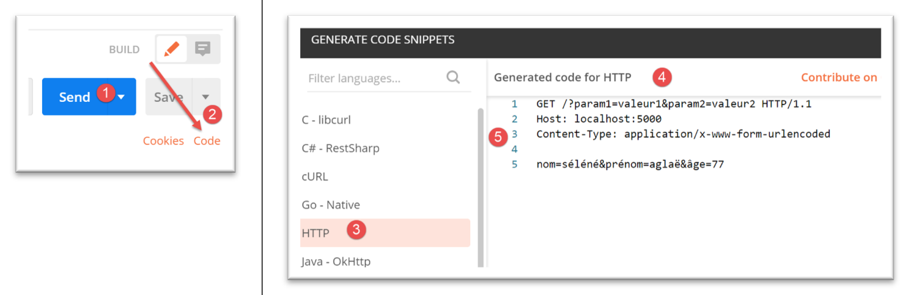
La réponse à cette requête est la suivante :
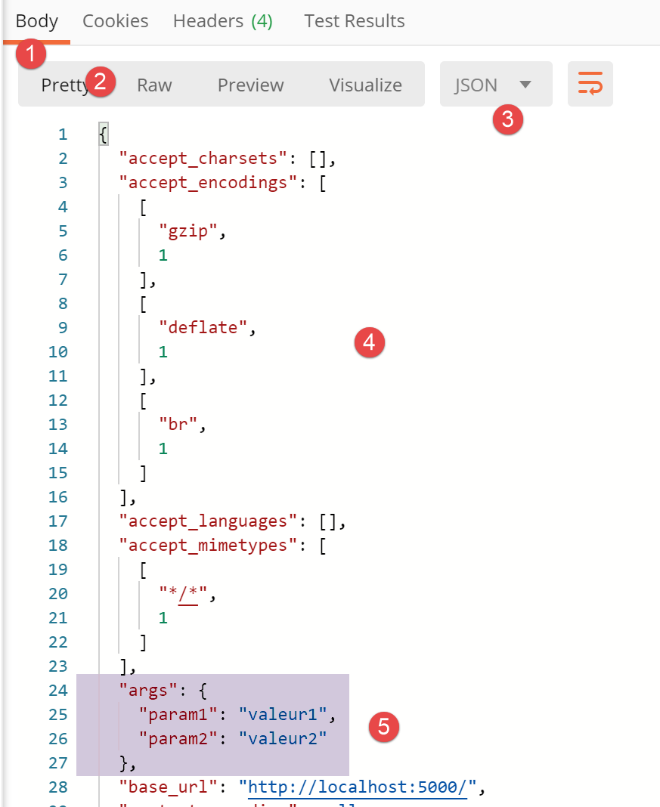
- en [1-5], on a reçu une chaîne jSON [3] ;
- ce qui généralement intéresse le service web, ce sont les paramètres de l’URL [ ?param1=valeur1¶m2=valeur2] et ceux qui ont été transmis dans le corps de la requête (document). C’est comme ça, en général, que le client lui transmet des informations. On voit en [5] que les paramètres de l’URL sont disponibles dans [request.args] ; Le reste de la réponse est le suivant :
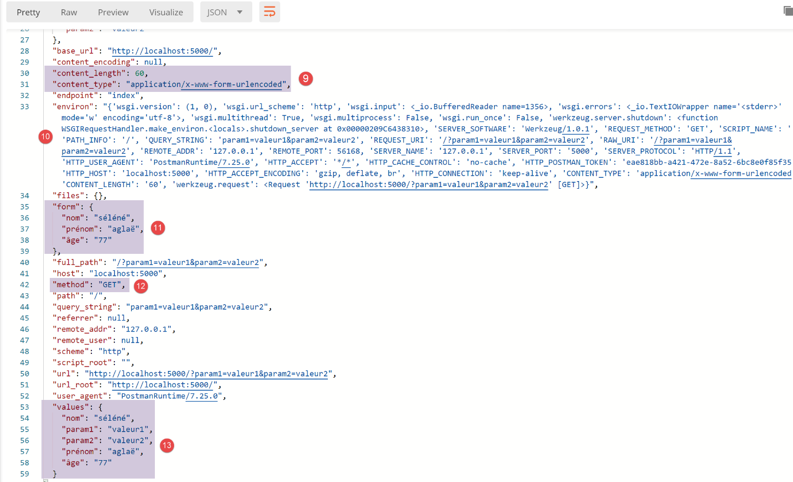
- en [9], les attributs des paramètres mis dans le corps de la requête :
- [content_type] est le type du document accompagnant la requête. On a vu que ce document contenait des informations de type [param=valeur] encodées sous la forme [x-www-form-urlencoded]. Postman a donc généré un entête HTTP [Content-Type] indiquant la nature du document ;
- [content_length] est la taille en octets de ce document ;
- en [10], l’attribut [request.environ] contient de nombreuses informations sur l’environnement dans lequel la requête du client est traitée. La plupart de ces informations se retrouvent dans les autres attributs de l’objet [request] ;
- en [11], les paramètres présents dans le corps de la requête sont disponibles dans l’attribut [request.form] ;
- en [12], la méthode utilisée pour envoyer la requête, ici la méthode [GET] ;
- en [13], l’attribut [request.values] est le dictionnaire de tous les paramètres, ceux de l’URL et ceux du corps du document. Pour obtenir les paramètres de la requête, on utilisera l’attribut :
- [request.args] pour avoir ceux présents dans l’URL ;
- [request.form] pour avoir ceux présents dans le corps du document ; Dans la console Postman, les logs sont les suivants :
Requête du client :
- ligne 9 : le type du document envoyé ligne 12 au serveur ;
- ligne 11 : les entêtes HTTP de la requête sont séparés du document envoyé par une ligne vide. C’est comme cela que le serveur repère la fin des entêtes HTTP du client ;
- ligne 12 : le document ‘url-encodé’. Tous les caractères accentués ont subi un encodage ; La réponse du client est la suivante :
- lignes 1-5 : les entêtes HTTP de la réponse terminés par une ligne vide ;
- lignes 41-45 : les éléments accentués ont subi un encodage UTF-8 ; Si maintenant on utilise la méthode [POST] pour envoyer la même requête avec les mêmes paramètres, on obtiendra la même réponse si ce n’est qu’en [12], on aura [‘method’ : ‘POST’].
Aussi quelle est la différence entre les méthodes GET et POST ? La différence est mince et a été instituée par l’usage qu’en ont fait historiquement les navigateurs :
- les paramètres dans l’URL sont pratiques parce qu’une URL ainsi paramétrée peut servir de lien dans un document HTML. L’utilisateur peut également changer les paramètres lui-même pour obtenir des réponses différentes du serveur. Dans ce cas, les navigateurs utilisent couramment la méthode [GET] et il n’y a pas de corps (content_length=0) dans la requête envoyée au serveur web (pas de paramètres cachés) ;
-
parfois on ne veut pas que les paramètres soient affichés dans l’URL. C’est le cas des mots de passe envoyés au serveur. Par ailleurs, la taille occupée par les paramètres de l’URL est limitée (une URL ne peut dépasser une certaine taille). Les paramètres du corps de la requête n’ont pas cette limitation. Egalement, beaucoup de paramètres dans l’URL la rendent illisible. Prenons le cas courant d’un formulaire d’inscription à un site web. Historiquement, lorsque les pages HTML n’embarquaient pas encore du Javascript, les navigateurs envoyaient les renseignements saisis par un POST. On parlait alors de valeurs postées ; Donc au début de la programmation web :
-
les méthodes GET étaient plutôt associées à la demande d’informations délivrées par un serveur web ;
- les méthodes POST étaient plutôt associées à l’envoi d’informations du navigateur vers le serveur. Le serveur était alors ‘enrichi’ par celles-ci ; Depuis Javascript est passé par là. Alors que dans les exemples précédents, le développeur n’avait pas la main (cliquer sur un lien déclenchait forcément un GET, valider un formulaire passait forcément par un POST), le Javascript leur a redonné la main. Dans ce modèle, la page HTML est associée à du code Javascript qui peut court-circuiter le navigateur. Ainsi le clic sur un lien peut-il être intercepté par le code Javascript qui peut ensuite exécuter un code faisant une requête au serveur. Cette requête sera transparente pour l’utilisateur. Il ne la verra pas. Ce code est un client web et comme nous l’avons fait avec Postman le développeur peut créer la requête qu’il veut. Pour revenir sur le clic sur un lien, il peut réaliser un POST alors que par défaut le navigateur aurait réalisé un GET. Ces évolutions ont rendu les différences entre GET et POST moins pertinentes.
Cependant, les développeurs adoptent souvent les règles suivantes :
- un GET ne doit pas modifier l’état du serveur. Des GET successifs réalisés avec les mêmes paramètres dans l’URL divent ramener le même document. De plus le GET n’a le plus souvent pas de corps (pas de document associé), seulement des paramètres dans l’URL ;
- le POST peut modifier l’état du serveur. Les paramètres sont le plus souvent envoyés dans le corps de la requête. On parle alors de valeurs postées. L’exemple du formulaire est le plus éloquent : les valeurs saisies par l’utilisateur vont être mises dans le corps du POST et le serveur va les enregistrer quelque part, souvent une base de données ; Dans la suite du document, nous ne nous astreignons à respecter aucune règle particulière.
22.6. scripts [flask-05] : gestion de la mémoire de l’utilisateur
22.6.1. Introduction
Dans les exemples client / serveur précédents on avait le fonctionnement suivant :
- le client ouvre une connexion vers le port 80 de la machine du service web ;
- il envoie la séquence de texte : en-têtes HTTP, ligne vide, [document] ;
- en réponse, le serveur envoie une séquence du même type ;
- le serveur clôt la connexion vers le client ;
- le client clôt la connexion vers le serveur ; Si le même client fait peu après une nouvelle demande au serveur web, une nouvelle connexion est créée entre le client et le serveur. Celui-ci ne peut pas savoir si le client qui se connecte est déjà venu ou si c'est une première demande. Entre deux connexions, le serveur "oublie" son client. Pour cette raison, on dit que le protocole HTTP est un protocole sans état. Il est pourtant utile que le serveur se souvienne de ses clients. Ainsi si une application est sécurisée, le client va envoyer au serveur un login et un mot de passe pour s'identifier. Si le serveur "oublie" son client entre deux connexions, celui-ci devra s'identifier à chaque nouvelle connexion, ce qui n'est pas envisageable.
Pour faire le suivi d'un client, le serveur peut procéder de diverses façons :
- lors d'une première demande d'un client, il inclut dans sa réponse un identifiant que le client doit ensuite lui renvoyer à chaque nouvelle demande. Grâce à cet identifiant, différent pour chaque client, le serveur peut reconnaître un client. Il peut alors gérer une mémoire pour ce client sous la forme d'une mémoire associée de façon unique à l'identifiant du client. C’est ainsi que fonctionnent, par exemple, les services PHP ;
-
lors d'une première demande d'un client, il inclut dans sa réponse non pas un identifiant mais la mémoire de l’utilisateur elle-même. Il ne garde rien côté serveur. Pour maintenir sa mémoire, le client web doit renvoyer cette mémoire à chaque nouvelle requête. Celle-ci est modifiée (ou non) à chaque nouvelle requête et renvoyée (ou non) au client. C’est la méthode utilisée par le framework Flask ; Les différences entre les deux méthodes sont les suivantes :
-
la méthode 1 est moins gourmande en bande passante. Seul est échangé entre le client et le serveur un identifiant. Lorsque la mémoire de l’utilisateur grandit, cela n’a aucune conséquence sur l’identifiant qui reste le même. Ce n’est pas le cas de la méthode 2 où la mémoire de l’utilisateur est échangée à chaque requête et peut grossir au fil des requêtes ;
-
la méthode 1 est plus gourmande en espace mémoire. En effet, le serveur stocke la mémoire de l’utilisateur sur ses systèmes de fichiers. S’il y a un million d’utilisateurs, cela peut peut-être poser un problème. La méthode 2 ne stocke rien sur le serveur ; Techniquement cela se passe ainsi dans les deux méthodes :
-
dans la réponse à un nouveau client, le serveur inclut l'en-tête HTTP [Set-Cookie : MotClé=Identifiant] ou [Set-Cookie : mémoire]. Avec la méthode 1, il ne fait cela qu'à la première demande. Avec la méthode 2, il le fait à chaque fois que la mémoire de l’utilisateur change ;
- dans ses demandes, le client renvoie systématiquement ce qu’il a reçu, un identifiant ou une mémoire. Il le fait via l'en-tête HTTP [Cookie : MotClé=Valeur] ; On peut se demander comment le serveur fait pour savoir qu'il a affaire à un nouveau client plutôt qu'à un client déjà venu. C'est la présence de l'en-tête HTTP Cookie dans les en-têtes HTTP du client qui le lui indique. Pour un nouveau client, cet en-tête est absent.
L'ensemble des connexions d'un client donné est appelé une session.
Le serveur peut maintenir d’autres types de mémoire :
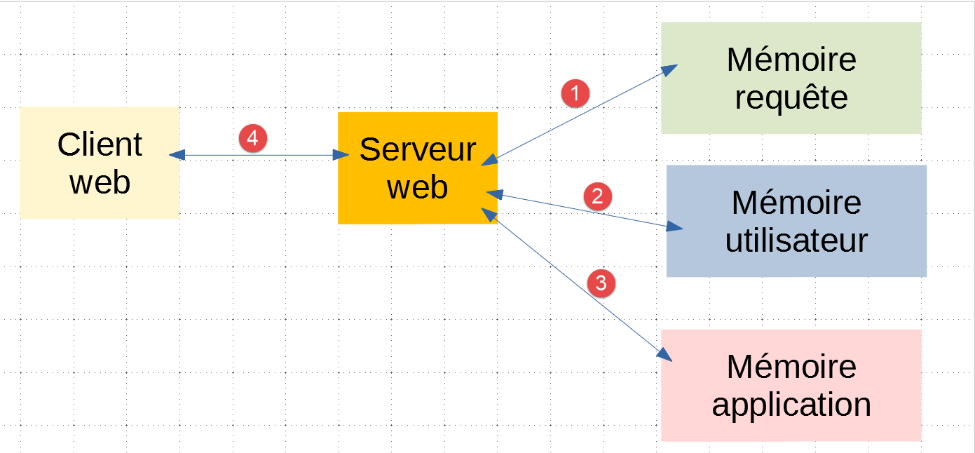
- en [1], la mémoire de la requête est particulière. Elle est utilisée lorsque la demande du client web est traitée non pas par un service (ou application) mais par plusieurs. Pour passer des informations au service i+1, le service i peut enrichir la requête traitée (request) avec ces informations. C’est ce qu’on appelle la mémoire de niveau requête. Nous n’utiliserons pas ce type de mémoire dans ce document ;
- en [2, 4], la mémoire de l’utilisateur que nous venons de décrire. Elle peut être implémentée localement [2] ou maintenue à l’aide du client [4] ;
- en [3], la mémoire de niveau ‘application’ est très généralement une mémoire en lecture seule. Elle est partagée par tous les utilisateurs. On y retrouve souvent des éléments de la configuration de l’application web, configuration partagée par tous les utilisateurs de l’application. On doit être prudents avec ce type de mémoire : l’écriture dedans doit se faire à un moment où les utilisateurs n’ont pas encore envoyé de requêtes, au démarrage de l’application le plus souvent. Ensuite, lorsque les requêtes arrivent, il est difficile d’écrire dans cette mémoire. Lorsque le serveur web sert simultanément plusieurs utilisateurs et que deux d’entre-eux veulent écrire dans la mémoire de niveau ‘application’, il y a un risque que cette mémoire soit corrompue. En effet, alors que l’utilisateur 1 a commencé à écrire dans la mémoire de niveau ‘application’, il peut être interrompu avant même d’avoir fini. On a alors une mémoire d’application incomplète. Comme elle est partagée, un utilisateur 2 peut la lire et obtenir un état incorrect ;
22.6.2. script [session_scope_01]
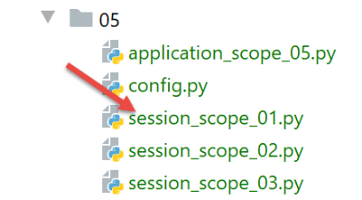
Les scripts [session_scope_xx] illustrent la gestion des mémoires utilisateurs.
Le script [session_scope_01] est le suivant :
- ligne 11 : une application Flask est instanciée ;
-
ligne 14 : l’attribut [secret_key] de cette application reçoit une valeur prise dans le fichier de configuration exploité aux lignes 1-3. Une session Flask n’est possible que si cet attribut est initialisé. On peut mettre n’importe quoi dedans. Il sert à crypter une partie de la ‘mémoire utilisateur’ qui sera envoyée au client. On met en général quelque chose difficile à deviner. Dans le fichier [config], la clé secrète est définie de la façon suivante :
-
pour la première fois, nous définissons une application web qui sert autre chose que l’URL /
- ligne 17 : l’URL [/set-session] sert à initialiser la session de l’utilisateur ;
- ligne 27 : l’URL [/get-session] sert à retrouver la mémoire de l’utilisateur (ou session de l’utilisateur) ;
- ligne 20 : on met quelque chose dans la mémoire (= la session) de l’utilisateur, ici un nom. La session se gère un peu comme un dictionnaire. On ne peut pas mettre n’importe quoi dans la session. Il faut que les valeurs qu’on y met puissent être transformées en jSON. Pour les types prédéfinis de Python, cela se fait sans intervention du développeur. Pour des objets propriétaires que Python ne connaît pas, il faut faire soi-même la conversion jSON ;
- ligne 22 : on crée une réponse HTTP sans contenu (absence de paramètre à make_response) ;
- ligne 23 : on dit au client qu’il va recevoir un document vide (taille de 0 octet) ;
- ligne 24 : on envoie la réponse HTTP au client. L’URL [/set-session] ne fait donc rien d’autres que d’initialiser une session utilisateur ;
- ligne 27 : l’URL [/get-session] permet à l’utilisateur de savoir ce qu’il y a dans sa session ;
- ligne 30 : on crée une réponse HTTP contenant la chaîne jSON de la session de l’utilisateur. Ici on a créé la chaîne jSON nous-mêmes au lieu de laisser Flask la générer. En effet, on ne veut pas que les caractères accentués soient échappés (ensure_ascii=False) ;
- ligne 31 : on dit au client qu’on lui envoie du jSON ;
-
ligne 32 : on envoie la réponse HTTP au client ; Le but de ce script est de montrer que la session utilisateur permet de faire le lien entre les requêtes successives de celui-ci :
-
la requête 1 demandera l’URL [/set-session] ;
- la requête 2 demandera l’URL [/get-session] et va récupérer le nom que la requête 1 aura initialisé ; Le script [config] qui configure les scripts du dossier [flask/05] est le suivant :
Nous lançons le script [session_scope_01] puis avec Postman nous allons demander l’URL [/set-session]. Auparavant nous allons vérifier quelques éléments de la requête qui va être faite :
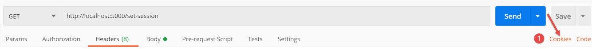
- en [1], accéder aux cookies de Postman ;
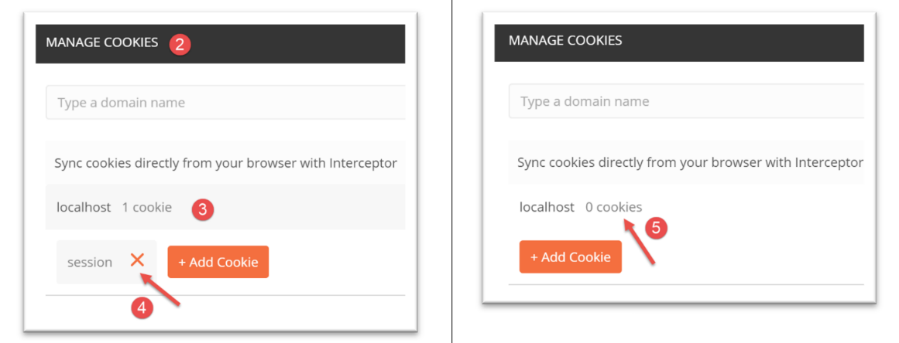
- en [2-4], on vérifie les cookies connus de Postman et on les supprime tous [4-5] ; Maintenant vérifions la requête HTTP qui va être générée :
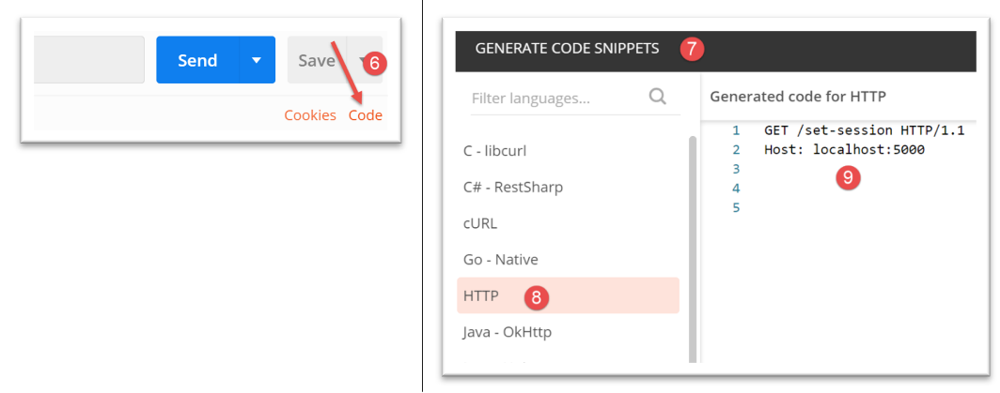
- en [9] : une partie des entêtes HTTP que Postman va mettre dans la requête à partir de la configuration que nous avons pu faire pour celle-ci. Cette vérification vous permet de vérifier que vous n’avez pas omis des paramètres ou au contraire laissé des paramètres inutiles ; Ceci fait, on peut exécuter la requête :
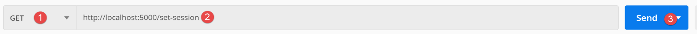
Il y a différentes façons de vérifier le résultat. On peut déjà regarder la fenêtre principale :
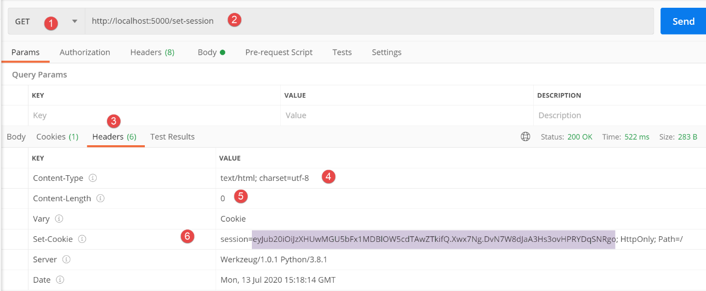
- en [1-2], la requête faite au service web ;
- en [3-6], les entêtes HTTP de la réponse ;
- en [4], comme dans le code on n’a pas précisé le type de la réponse, Flask a utilisé par défaut le type [text/html] ;
- en [5], le client sait qu’il n’y a pas de document dans la réponse ;
- ligne 6 : l’entête [Set-Cookie] a été envoyé par le serveur Flask. Sa valeur est appelée un cookie de session. Elle est constituée de trois éléments :
- [session=valeur] : valeur représente la mémoire de l’utilisateur sous une forme codée. Cette mémoire est décodable (cf. |https://blog.miguelgrinberg.com/post/how-secure-is-the-flask-user-session|). Néanmoins à cause de la clé secrète utilisée par le serveur, l’utilisateur ne peut pas modifier la mémoire reçue pour la renvoyer ensuite au serveur. Lorsque le serveur reçoit une session, il est ainsi assuré de recevoir une session non corrompue ;
- [HttpOnly] : la présence de cet élément indique au navigateur qui le reçoit que le cookie ne doit pas être accessible au Javascript que peut contenir la page qu’il affiche ;
- [Path=/] est le chemin pour lequel il faut renvoyer le cookie de session donc ici tout chemin de l’application web. A chaque fois que l’utilisateur au clavier demandera explicitement (il tape une URL) ou implicitement (il clique sur un lien) une URL de ce domaine, le navigateur renverra automatiquement le cookie de session qu’il a reçu ; L’inconvénient de la fenêtre principale est qu’on n’a pas accès à la requête complète qui a amené à cette réponse. Ce qui est présenté dans cette fenêtre prête à confusion :
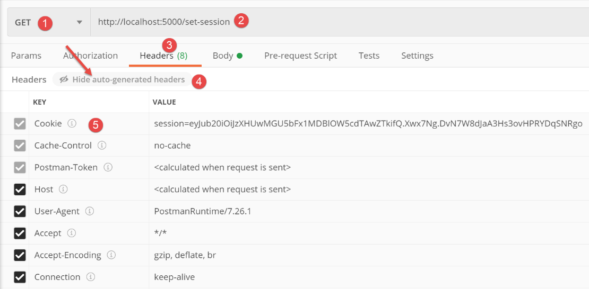
- dans les entêtes HTTP [3-4] est présenté en [5] un cookie de session. On pourrait croire alors que Postman a mis dans la requête un cookie de session alors que ce n’est pas le cas. Les entêtes [3] représentent en fait les entêtes HTTP qui seront envoyés lors de la prochaine requête telle que celle-ci est actuellement configurée. Postman vient de recevoir un cookie de session qu’il renverra lors de la prochaine requête. C’est pourquoi on a [5] ; On peut avoir accès au dialogue client / serveur dans la console Postman qu’on obtient avec Ctrl-Alt-C :
- ligne 14 : le cookie de session envoyé par le serveur ; Maintenant demandons l’URL [/get-session] :
- ligne 9 : le client Postman a renvoyé au serveur le cookie de session qu’il avait reçu ;
-
ligne 18 : la chaîne jSON envoyée par le serveur ; Cet exemple nous montre divers points :
-
le client Postman renvoie le cookie de session qu’il reçoit du serveur Flask. Les navigateurs web procèdent toujours ainsi ;
- nous voyons que la requête 2 [/get-session] a permis de récupérer une information créée lors de la requête 1 [/set-session]. On a donc là une mémoire de l’utilisateur ;
- lignes 11-16 : le serveur Flask n’a pas renvoyé de cookie de session. Ce n’est pas systématique. Le serveur Flask ne renvoie le cookie de session que si la dernière requête a modifié la mémoire de l’utilisateur ;
22.6.3. script [session_scope_02]
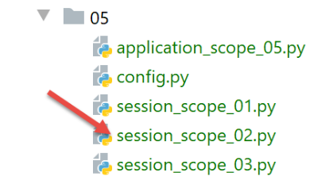
Le script [session_02] est le suivant :
- ligne 11 : ici la clé secrète est générée à l’aide d’une fonction. L’intérêt de celle-ci est qu’elle génère une chaîne de caractères complexe de façon aléatoire. On rappelle que la variable [app] est l’instance de classe Flask créée ligne 8 ;
- ligne 15 : cette fois-ci, il n’y aura qu’une route, la route / ;
- lignes 17-29 : on gère une session contenant trois compteurs [n1, n2, n3]. Lors du 1er appel de l’utilisateur [n1, n2, n3]=[0, 10, 100] puis à chaque appel ces compteurs sont incrémentés de 1 ;
- ligne 18 : lors de la 1ère requête, la session de l’application est vide. L’expression [session.get(‘clé’)] rend la valeur [None]. Pour les requêtes suivantes, cette expression rendra la valeur associée à la clé ;
- ligne 31 : ces compteurs sont mis dans un dictionnaire ;
- ligne 33 : ce dictionnaire est le document de la réponse HTTP. On rappelle, que Flask transforme automatiquement les dictionnaires en chaîne jSON ;
- ligne 34 : on dit au client web qu’il va recevoir du jSON ;
- ligne 35 : on envoie la réponse HTTP au client ; Exécutons ce script et interrogeons l’application web ainsi créée avec Postman après avoir supprimé tous les cookies du client Postman [1-3] :
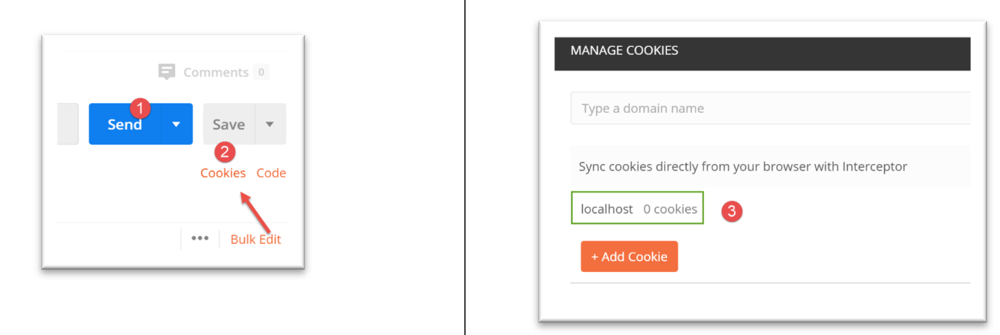
Dans la console Postman, les échanges client / serveur sont les suivants :
- en [14], le cookie de session envoyé par le serveur ;
- en [18-22], la réponse du serveur sous la forme d’une chaîne jSON ; Refaisons une deuxième fois la même requête. Les logs évoluent de la façon suivante :
- ligne 9 : le client Postman renvoie le cookie de session qu’il a reçu ;
- ligne 15 : dans sa réponse, le serveur envoie un nouveau cookie de session, ceci parce que la requête du client a modifié la mémoire de l’utilisateur (= la session) ;
- lignes 19-23 : les nouvelles valeurs des compteurs ;
22.6.4. script [session_scope_03]
Ce nouveau script vise à montrer qu’on peut mettre différents types Python dans une session : liste, dictionnaire, objet. La seule contrainte est que les objets mis en session soient sérialisables en jSON. S’ils ne le sont pas par défaut (listes, dictionnaires), il faut alors faire soi-même la conversion en jSON.
- lignes 1-3 : l’application web est configurée ;
- lignes 5-11 : les dépendances sont importées ;
- ligne 14 : l’application Flask est instanciée ;
- ligne 17 : l’attribut [secret_key] est initialisé. C’est ce qui permet l’utilisation de sessions ;
- ligne 21 : l’unique route de l’application ;
- lignes 23-33 : gestion d’une liste dans la session. On a mis dans celle-ci des éléments sérialisables par défaut en jSON ;
- lignes 35-46 : gestion d’un dictionnaire dans la session. On a mis dans celui-ci des éléments sérialisables par défaut en jSON ;
- lignes 48-58 : gestion d’une personne. Un objet [Personne] n’est pas sérialisable par défaut en jSON. Il faut donc prendre des précautions ;
- ligne 58 : on utilise la méthode [BaseEntity.asjson] pour stocker dans la session la chaîne jSON de la personne. Noter qu’on aurait pu utiliser [personne.asdict] car [personne.asdict] est un dictionnaire contenant des valeurs sérialisables par défaut en jSON ;
- ligne 55 : parce qu’on a stocké une chaîne jSON dans la session, on récupère la personne dans celle-ci en utilisant la méthode [BaseEntity.fromjson] ;
- ligne 61 : on crée le dictionnaire [résultats] qui sera envoyé comme réponse au client. On sait que dans ce cas là, Flask envoie la chaîne jSON du dictionnaire. Il faut donc que celui-ci ne contienne que des valeurs sérialisables par défaut en jSON ;
- ligne 64 : on met explicitement la chaîne jSON du dictionnaire [résultats] dans a réponse HTTP. Flask l’aurait fait par défaut. Seulement, toujours par défaut, il utilise le paramètre [ensure_ascii=True], ce qui ne nous convenait pas ;
- ligne 65 : on dit au client qu’il va recevoir du jSON ;
- ligne 66 : on lui envoie la réponse ; On lance l’application web. On supprime tous les cookies du client Postman. Puis celui-ci demande l’URL [http://localhost:5000]. Le dialogue client / serveur dans la console Postman est le suivant :
Nous faisons la requête une seconde fois :
- ligne 9 : le client renvoie le cookie de session qu’il a reçu ;
- ligne 15 : le serveur lui en renvoie un autre car le contenu de la session a changé (ligne 19). On rappelle que ce contenu est présent dans le cookie de session sous forme codée ;
22.7. scripts [flask/06] : informations partagées par tous les utilisateurs
22.7.1. Introduction
Cette section vise à montrer comment gérer des informations de portée application, ç-à-d partagées par tous les utilisateurs. Ces informations sont typiquement des informations de configuration de l’application. Nous avons vu qu’une application web pouvait maintenir différents types de mémoire :
Nous nous intéressons ici à la mémoire de l’application [3].
22.7.2. script [application_scope_01]
Le script [application_scope_01] montre une façon de gérer des données de portée ‘application’ :
- lignes 1-3 : on récupère le dictionnaire de la configuration. On va montrer que le code situé en-dehors des fonctions de routage n’est exécuté qu’une fois. L’application Flask reste en mémoire. Toutes les informations initialisées en-dehors des routes sont globales à celles-ci et donc connues de celles-ci. Ainsi le dictionnaire [config] de la ligne 3 va-t-il être rendu par la route / (ligne 24). On va montrer que tous les clients web vont recevoir le même dictionnaire et que celui-ci est donc partagé par tous les clients. C’est donc une information de portée ‘application’ ;
- ligne 35 : on met un log pour voir si le code des lignes en-dehors de la fonction de routage (lignes 1-10, 32-38) est exécuté plusieurs fois ; La configuration [config] est la suivante :
Nous lançons cette application. Les logs dans la console PyCharm sont les suivants :
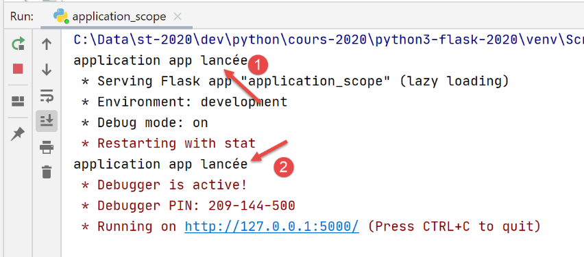
- en [1], lancement initial de l’application ;
- en [2] parce qu’on a demandé le mode [Debug], l’application est relancée en mode [Debug] ; Maintenant avec un navigateur (Chrome ci-dessous), on demande l’URL [http://127.0.0.1:5000/] :
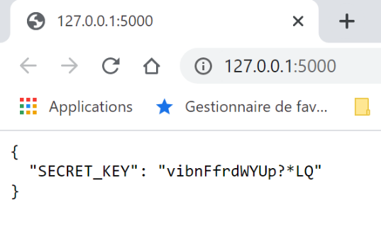
Maintenant avec un navigateur Firefox :
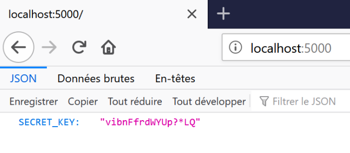
Maintenant avec le client Postman :
Maintenant, on revient dans la console [Run] de Pycharm :
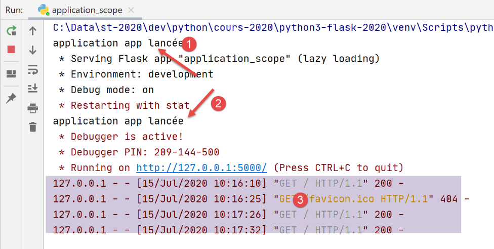
- les deux logs [1, 2] sont toujours là mais il n’y en a pas d’autres alors que l’on voit les trois requêtes reçues par le serveur web ; Pour être totalement sûrs que l’application n’est pas rechargée à chaque nouvelle requête, on peut mettre un compteur dans la configuration et l’incrémenter à chaque nouvelle requête. On verra alors que chaque client voit le compteur dans l’état où l’a laissé le précédent client. On rappelle cependant que les clients ne devraient pas modifier des données de portée application parce qu’elles sont partagées entre tous les clients et que dans un contexte où le serveur sert simultanément plusieurs clients sans garantie que la requête d’un client soit exécutée entièrement sans être interrompue, un client 1 qui a émis une requête 1 interrompue avant sa fin peut laisser les données partagées dans un état corrompu pour les clients suivants.
22.7.3. script [application_scope_02]
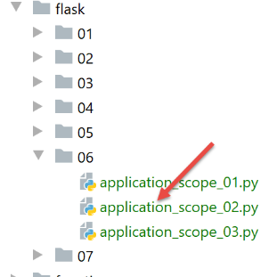
Le script [application_scope_02] va faire ce qu’il ne faut pas faire : permettre aux clients de modifier des informations partagées avec les autres utilisateurs. On va partager un compteur entre les utilisateurs qui vont l’incrémenter. On va voir que chaque utilisateur voit les modifications apportées par les autres utilisateurs au compteur.
Le script est le suivant :
- lignes 10-12 : le dictionnaire [config] partagé par les utilisateurs. Il contient un compteur ;
- ligne 22 : à chaque fois qu’un utilisateur demandera l’URL /, le compteur de la configuration sera incrémenté ;
- lignes 23-26 : la chaîne jSON du dictionnaire est envoyée à chaque client ; On lance ce script. Puis on demande l’URL [http://127.0.0.1:5000/] avec un premier navigateur :
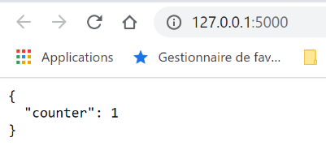
On fait ensuite la même chose avec un second navigateur :
Puis une troisième fois avec Postman :
On voit que chaque client récupère le compteur dans l’état où le client précédent l’a laissé. Ils ont donc bien accès à la même information.
22.7.4. script [application_scope_03]
Le script [application_scope_03] montre pourquoi l’information partagée entre utilisateurs doit être en lecture seule.
Le script est le suivant :
- ligne 43 : on a changé le mode d’exécution de l’application web. On a écrit [threaded=True] pour indiquer que l’application devait servir les utilisateurs simultanément. Cela se fait au moyen de threads d’exécution :
- il peut y avoir plusieurs threads d’exécution simultanés, chacun servant un utilisateur ;
- le processeur de la machine est partagé par ces threads ;
- un thread peut être interrompu avant qu’il n’ait terminé son travail. Il sera repris ultérieurement ;
- ligne 19 : la fonction [index] peut être exécutée simultanément par plusieurs threads ;
- ligne 24 : on récupère le nom du thread qui exécute la fonction [index] ;
- ligne 26 : on lit la valeur du compteur. Pour les besoins de notre démonstration on décompose l’incrémentation du compteur de la façon suivante :
- étape 1 : lecture du compteur (1 par exemple) par le thread 1 ;
- étape 2 : pause du thread 1 pendant 5 secondes (ligne 29). Parce que le thread 1 a demandé une pause, le processeur est donné à un autre thread, le thread 2. Le but est que ce nouveau thread lise la même valeur du compteur (=1). Puis lui aussi fait une pause de 5 secondes et perd le processeur ;
- étape 3 : incrémentation du compteur, ligne 31 à partir de la valeur lue à l’étape 1 (=1). Le thread 1 est le 1er à le faire : il passe le compteur à 2 puis termine l’exécution de la fonction [index]. Puis c’est au tour du thread 2 de se réveiller et de passer lui aussi le compteur à 2 à partir de la valeur lue à l’étape 1 (=1). Au final, après le passage des deux threads, le compteur est à 2 alors qu’il devrait être à 3 ;
- ligne 33 : on affiche la valeur du compteur pour vérification ; Nous lançons le script puis demandons l’url [http://loaclhost :5000/] avec deux navigateurs puis avec Postman. Les logs dans la console PyCharm sont alors les suivants :
- lignes 9-10 : les deux premiers threads 2 et 4 lisent la même valeur 0 du compteur ;
- ligne 11 : le thread 2 passe le compteur à 1 ;
- ligne 13 : le thread 4 passe le compteur à 1. A partir de maintenant la valeur du compteur est incorrecte ;
- lignes 15-16 : le thread 5 n’est pas interrompu et gère correctement la valeur du compteur ; On retiendra de cet exemple que le code d’une application web ne doit pas modifier la valeur d’informations partagées par les utilisateurs.
22.8. scripts [flask/07] : gestion des routes

Nous nous intéressons ici à la gestion des routes d’une application, ç-à-d les URL servies par l’application web.
22.8.1. script [main_01] : routes paramétrées
Le script [main_01] introduit la possibilité de paramétrer les routes :
- ligne 17 : on précise le type des paramètres de l’URL. Cela permet à Flask de faire des vérifications. Si le paramètre n’est pas du type attendu, la requête du client sera refusée (erreur 400 Bad Request). Donc Flask fait une partie du travail que nous aurions du faire ;
- ligne 18 : pour les paramètres, on doit reprendre les noms exacts des paramètres de la ligne 17 mais pas forcément leur ordre ;
- ligne 20 : on utilise la fonction [send_plain_response] pour envoyer la réponse au client web ;
- ligne 9 : la fonction [send_plain_response] reçoit la chaîne de caractères à envoyer au client ;
- ligne 11 : le corps de la réponse HTTP est construit ;
- ligne 12 : on dit au client qu’on lui envoie du texte brut ;
- ligne 13 : on envoie la réponse HTTP ;
- lignes 23-62 : d’autres routes paramétrées qui seront utilisées ultérieurement dans un exercice d’application ; On lance le script et on l’interroge avec le client Postman :
22.8.2. script [main_02] : externalisation des routes
Dans le script [main_01] précédent, le code peut devenir important s’il y a de nombreuses routes. Le script [main_02] montre comment externaliser les routes.
Le script [routes_02] rassemble les fonctions associées aux routes du script précédent :
On notera que le script [routes_02] n’est pas un script de routes. C’est une liste de fonctions. C’est le script principal [main_02] qui fait le lien entre routes et fonctions :
- ligne 4 : on importe le script des fonctions associées aux routes ;
- lignes 9-16 : association routes / fonctions ; Avec cette méthode, chaque fonction associée à une route peut faire l’objet d’un script séparé si nécessaire.
Les résultats sont les mêmes que ceux obtenus avec le script [main_01] précédent.